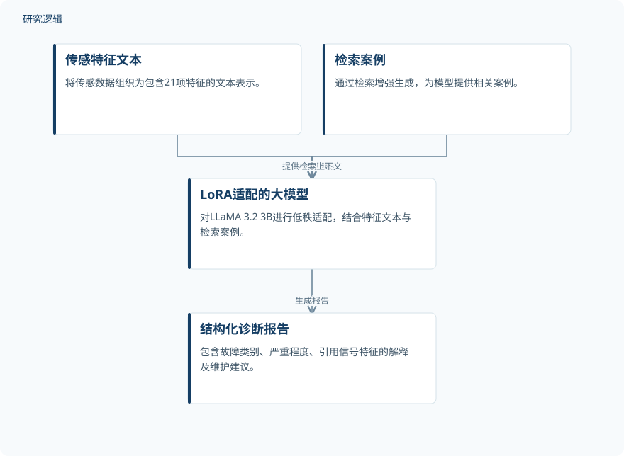

摘要解读
融合检索增强与低秩微调大语言模型的结构化轴承故障诊断
RAG-augmented LoRA fine-tuned LLM for structured bearing fault diagnosis in Industry 4.0 predictive maintenance
解读更新 2026-10-31 09:46 · 依据公开摘要整理，未核验全文细节
轴承故障诊断不仅需要判断故障类别，也需要把信号依据转化为可阅读的维护报告。这项研究将检索增强与大模型微调结合，展示了结构化报告的生成方式，也明确揭示了检索收益、分类精度与跨域适用性的边界。
文章目录
从故障分类走向结构化诊断报告
本文关注的输出不只是故障标签，还包括严重程度、引用信号特征的解释和维护建议。因此，阅读这项工作的关键，是区分“能够生成诊断报告”与“故障判断足够准确”：报告形式更完整，并不自动意味着分类性能优于传统模型。
传感特征转文本，结合检索与低秩适配
研究将传感数据组织为包含21项特征的文本表示，结合检索增强生成（RAG），并对LLaMA 3.2 3B进行低秩适配（LoRA），输出结构化报告。摘要明确了这些组成环节，但未展开特征定义与完整提示词。
严格跨负载实验中，训练、验证和检索索引仅使用0–1 HP记录，评估使用完整的2–3 HP集合，共2 308个窗口。训练时每个提示包含检索案例；推理时比较同一适配器开启与关闭检索的表现，而非比较两个独立训练的模型。
依据摘要整理的诊断流程示意


概括传感特征文本、检索与LoRA适配模型的关系，仅为摘要整理示意，并非论文原图。
下载 SVG图示关系说明
实线表示相邻阶段的信息流，虚线表示跨阶段联系或反馈。
传感特征文本 → LoRA适配的大模型：提供特征表示；检索案例 → LoRA适配的大模型：提供检索上下文；LoRA适配的大模型 → 结构化诊断报告：生成报告
检索改善跨负载表现，但未超过分类基线
在CWRU文件级划分中，大模型的macro-F1为78.45%，低于SVM的93.15%和随机森林的91.21%。严格跨负载实验中，seed 42下开启检索使macro-F1从19.91%升至67.89%；另外的训练种子也均呈现检索收益，但传统基线和紧凑型原始信号InceptionTime网络仍更准确。
在Paderborn上，固定的CWRU训练模型仅达到21.02% macro-F1；使用目标域LoRA微调和目标域专用FAISS索引后达到77.33%，仍低于随机森林的80.39%。这说明目标域适配能够改善该设置下的表现，不能据此宣称实现了跨数据集泛化。
窗口评估、轴承独立性与解释证据的边界
摘要给出了跨负载评估的窗口数，但不足以判断独立轴承数量、各类别样本分布及现场验证范围。Paderborn划分在记录层面互不重叠，却不是轴承层面互不重叠；这些边界影响结果应如何理解，不能把窗口数量直接当作独立设备数量。
检索深度和句子编码器的稳定性检查仅涉及单个种子，运行元数据与预期频率文本的贡献尚未确立。可读性指标只描述语言复杂度，不是人类可解释性的证据；摘要也不足以判断维护建议的正确性及实际运维收益。
阅读启发：把检索收益与诊断可信度分开看
阅读启发：后续阅读可重点追问信号特征如何支撑报告解释、检索案例如何参与判断，以及目标域适配依赖哪些信息。应分别审视分类准确性、解释依据和维护建议的有效性，不把文字流畅或检索带来的提升视为系统已具备现场诊断能力。
以上为本站阅读启发与建议，不是论文已验证的结论。